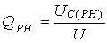
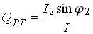
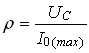
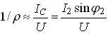
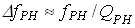
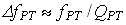

Задание 3. Рассчитать параметры контуров:
- добротности последовательного  и параллельного  колебательных контуров;
- характеристическое сопротивление  и характеристическую проводимость  контуров;
- полосу пропускания последовательного  и параллельного  колебательных контуров;